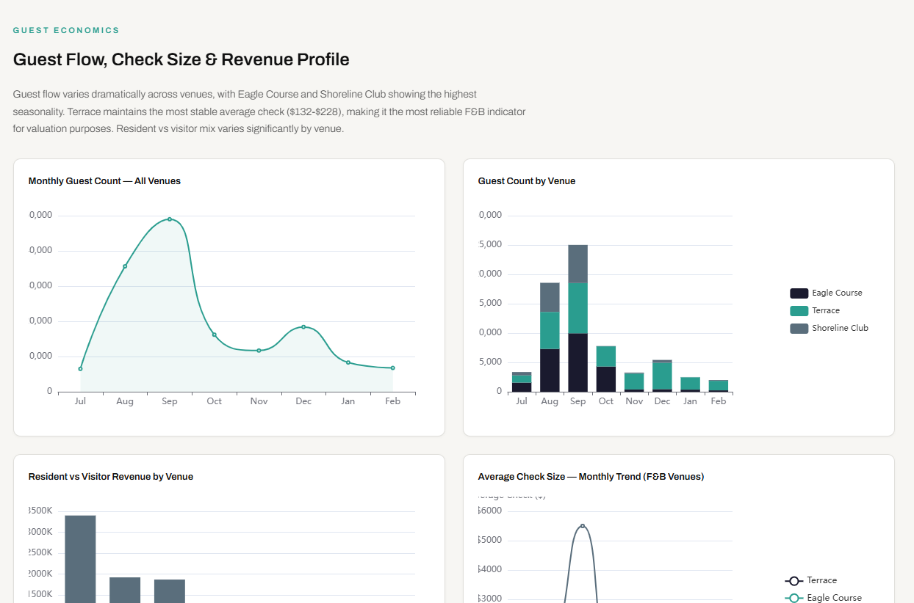
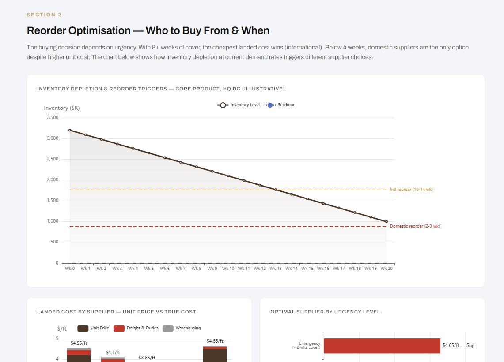

Every Quarri deployment starts the same way. We don't replace your stack - we make it usable by AI.
Legacy ERPs, databases, spreadsheets, scanned PDFs. Half a day per source - absorbed in the SaaS fee.
Auto-cleaned, deduplicated, structured into one queryable layer.
Your business rules, metrics, and definitions - embedded so AI gets it.
Quarri is the layer between your messy systems and the AI model your team uses. Read, transform, write back - at scale, with no inference required for the data work itself.
Quarri is a deterministic layer beneath probabilistic LLMs. Encoded workflows and structured data handle the data work - no inference required, no hallucinations on the numbers. LLMs do what they're best at: reasoning.
Flexible reasoning. Slow per call. Per-token cost. Limited context window.
Encoded workflows + structured data. Cents per workflow. TB-scale. No hallucinations on the data ops.
Resource extraction. Supply chain. Processing & manufacturing. Quarri replaces the spreadsheets behind every step.
The Quarri integration has made me do more with AI in the past 6 weeks than I have in the past 6 months.
When the standard buckets don't cover it, our team gets hands-on. Custom integrations, judgement-heavy workflows, on-prem databases - we'll build it.
OCR plus structured extraction on weighbridge tickets, GRNs, invoices, and field reports.
The workbook only one person understands? We model it, automate it, replace it.
Direct connectors into legacy SQL, mainframes, and proprietary systems.
Multiple ERPs from acquisitions, regional variations, off-the-shelf hacks - all reconciled.
The same knowledge layer powers finance and operations - with views built around how each function works. Real dashboards, on the systems your team already runs.

Live cash flow, board-ready reporting, segmented analysis - connected to legacy ERPs, refreshed in real time, drilled to the transaction in seconds.
Explore Finance & Strategy
From reactive firefighting to live, connected, strategic operations - throughput, defects, and lead time across every site, line, and shift.
Explore OperationsIndustrial operators run on legacy ERPs and paper. We start there - and turn it into a working knowledge layer.
Your data, in your database. Database-per-customer isolation, AES-256 encryption end-to-end, US/EU residency - and never used to train models. Built on AWS and an isolated, certified data platform.